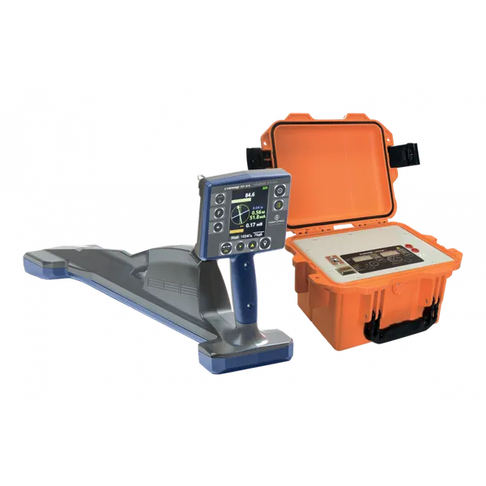
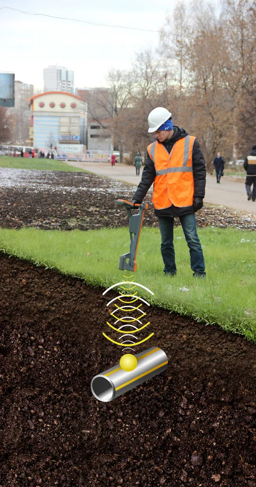
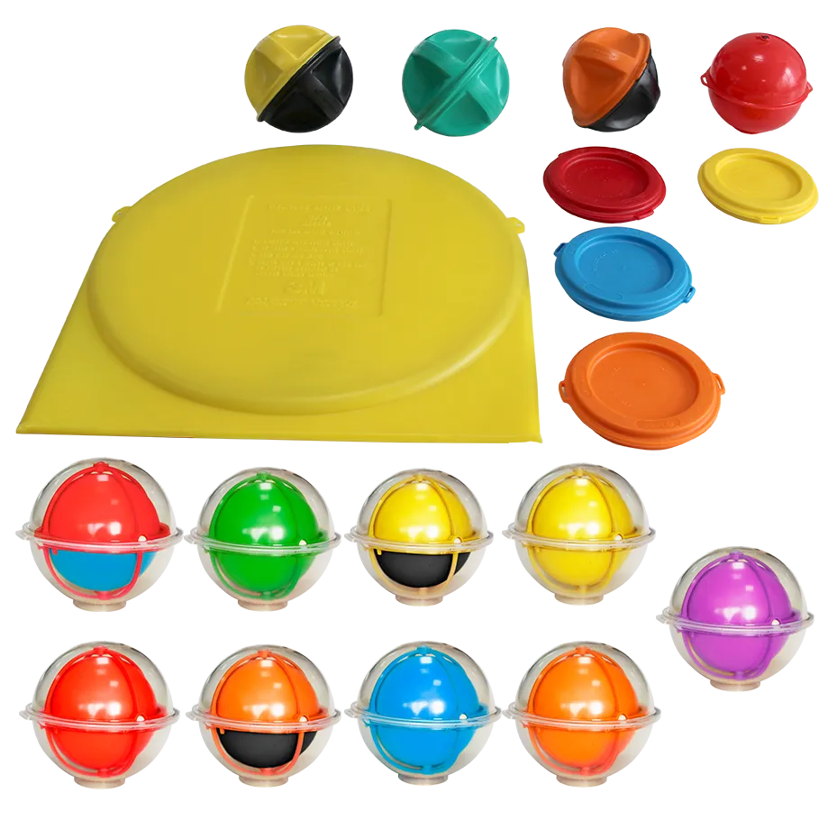
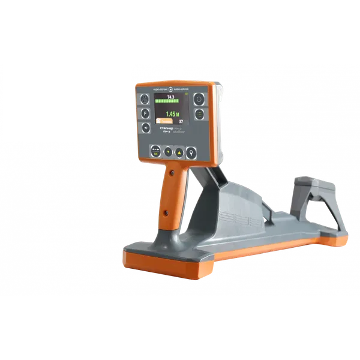
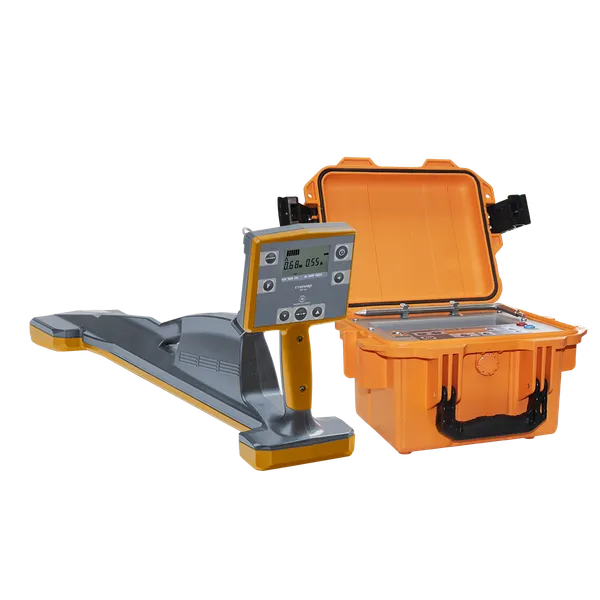

Комплекс трассопоисковый "Сталкер" 75-24
253 638,00 ₽
277 123,00 ₽
Розничная цена. Ваша скидка 15% — в счёте
Маркероискатель ПМ-3 предназначен для обнаружения всех типов пассивных электронных маркеров, (в том числе интеллектуальных), используемых для идентификации подземных коммуникаций.
Маркероискатель ПМ-3 позволяет записывать и считывать данные интеллектуальных электронных маркеров серий 1400‑XR‑iD, 1200‑XR‑iD.
Ознакомиться с функцией записи интеллектуальных маркеров можно по ссылке VK Видео
Особенности:
Определение глубины залегания маркера (в зависимости от типа маркера до 3,0 м);
|
 |
 | 1. Максимальная глубина обнаружения маркеров различных производителей (при условии установки согласно инструкции изготовителя) |
| Маркеры | Диаметр маркера |
| Глубина | |
| околоповерхностные | |
|---|---|
| 20 мм (0,8') | 0,9 м |
| шаровые | |
| 114 мм (4,5') | 1,8 м |
| 104 мм (4,1') | 1,8 м |
| 138 мм (5,4') | 2 м |
| серии МП (АО «НПФ«Радио-Сервис»)110 мм (4,3')1,9 м *дисковые | |
| 133 мм (5,2') | 1,8 м |
| 213 мм (8,4') | 2,1 м |
| полноразмерные | |
| 380 мм (15') | 2,8 м |
| 225 мм (8,9') | 2,5 м |
| *- максимальная глубина указана для поиска маркеров с помощью маркероискателей «Сталкер» | |
| Максимальная глубина чтения данных интеллектуальных маркеров маркероискателем Сталкер ПМ-3 | |
| Серия 1400-XR-iD (шаровые), все маркеры, кроме электроснабжения Электроснабжение Серия 1200-XR-iD (полноразмерные) | 1,5 м 1,0 м 2,4 м |
| 2. Погрешность определения глубины залегания маркера, не более | |
| ±(15%+5 см) | |
| 3. Габаритные размеры, не более | |
| 700х300х140 мм | |
| 4. Масса, не более | |
| 2,0 кг | |
| 5. Диапазон рабочих температур | |
| От - 20 до + 55 °С | |
| 6. Время непрерывной работы от Li-Ion аккумуляторов | |
| до 9 часов | |
| 7. Степень защиты | |
| IP54 | |
Требования к системе: Windows XP SP2 и выше.
Требования к ПК: наличие встроенного Bluetooth модуля или внешнего Bluetooth USB адаптера с установленными для него на ПК драйверами.
Перед загрузкой убедитесь у системных администраторов, что на Вашем компьютере не стоит запрет на загрузку и установку сторонних программ.
В некоторых случаях возможна некорректная работа операционной системы Вашего компьютера с некоторыми Bluetooth USB адаптерами.
Если при работе с программой не удается установить связь прибора с ПК, то:
В противном случае:
Работа трассоискателей и маркероискателей «Сталкер»с высокоточным RTK планшетом PrinCe LT700H.
Повысить точность нанесения местоположения коммуникаций на карту можно с помощью высокоточного RTK-планшета PrinCe LT700H. Он передает координаты с расчетной точностью до 10 см, используя RTK поправки, и в автономном режиме (без RTK поправок) до 1 м.
Начало работы
Установите с PlayMarket приложение «GNSS Tool», если оно не было установлено.
С сайта radio-service.ru в разделе «Трассоискатели» скачайте и установите Android- приложение «Stalker Terminal». Для установки приложения в настройках планшета необходимо разрешить установку приложений из неизвестных источников.
Для обеспечения передачи координат с высокой точностью планшет LT700H использует RTK поправки от базовых станций сети PrinNet. Доступ к ним Вы можете получить в службе технической поддержки АО «Прин» (услуга платная). Дополнительно ознакомиться с актуальным покрытием и расположение базовых станций сети PrinNet можно на сайте компании по адресу prin.ru.
Внимание. Перед началом работы прикрутите без усилий антенну к планшету и установите таким образом, чтобы ее торец смотрел вверх. По завершению работы для обеспечения сохранности антенны снимите ее.
Настройки системы планшета
Для первоначальной настройки системы планшета необходимо активировать режим «Для разработчиков». Для этого:
Настройки приложения «GNSS Tool»
1. Если Вы планируйте работать без RTK поправок, то откройте приложение «GNSS Tool», зайдите в пункт «Connect» и нажмите «CONNECT».
2. Если Вам необходимо получать координаты с высокой точностью, то для получения RTK поправок требуется наличие мобильного интернета, а так же в приложении необходимо прописать параметры подключения: IP адрес, Port, логин, пароль и тип подключения, которые нужно получить в службе технической поддержки АО «Прин».
Далее:
Примечание * - Параметры подключения, полученные от АО «Прин».
Далее на основном экране приложения отображаются:
а) B,L - координаты местоположения;
б) SVs number - количество спутников, используемые/найденные;
в) Status:
Single или avto - автономное позиционирование, нет приема RTK поправок от базовых станций. Точность определения координат невысокая;
Float – плавающее решение, т.е. фазовая неоднозначность не разрешена, поправки с базовой станции приемник не получает в связи с отсутствием сети интернет, либо вы находитесь в здании. Точность определения координат не максимальная;
Fixed - фиксированное решение, т.е. разрешена фазовая неоднозначность. В этом статусе приемник получает поправки с базовой станции. Оптимальный режим для работы, обеспечивающий высокую точность до 10 см.;
г) HRMS (m) – расчетная точность в плане (на местности);
д) VRMS (m) - расчетная точность по высоте.
В дальнейшем после запуска приложения зайдите в пункт «Connect» и нажмите «CONNECT».
Примечание. По всем вопросам, связанным с работой планшета PrinCe LT700H и приложения «GNSS Tool», обращайтесь в службу технической поддержки АО «Прин» (+7-800-222-34-91, support@prin.ru).
Настройки приложения «Stalker Terminal»
После запуска и настройки приложения «GNSS Tool» откройте приложение «Stalker Terminal».
Дальнейшее соединение и работу трассоискателей с приложением «Stalker Terminal» смотрите в соответствующих разделе руководства по эксплуатации на трассоискатели, а так же в обучающем фильме на сайте radio-service.ru в разделе трассоискатели или YouTube.
По завершению работы для экономии заряда батареи в приложении «GNSS Tool»
зайдите в пункт «Connect» и нажмите «DISCONNECT» .
Для обеспечения сохранности антенны открутите ее и уберите в защитный карман.
При длительном не использовании рекомендуется сделать полное выключение планшета.

253 638,00 ₽

155 428,00 ₽

137 372,00 ₽